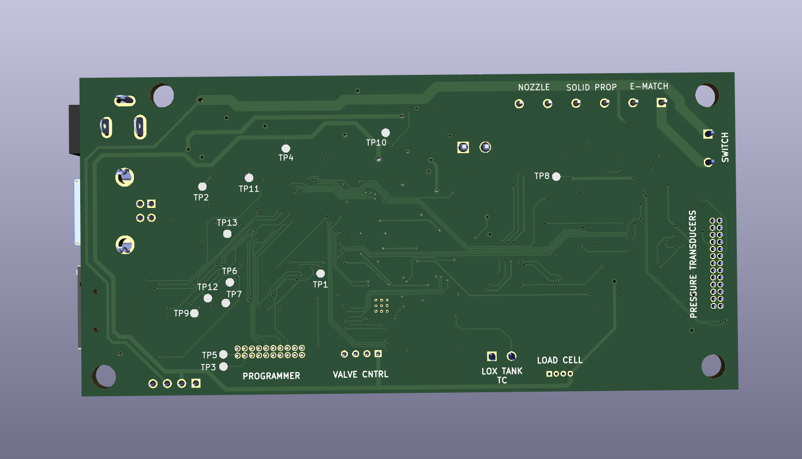
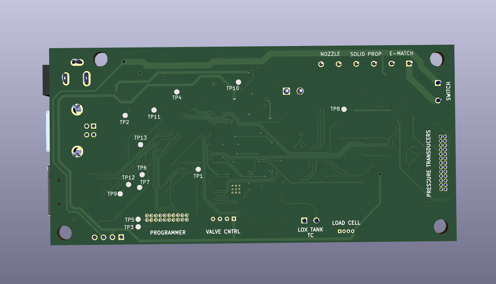

Liquid Engine Controller
 

Description
The Liquid Engine Controller is the main embedded processor of Sun Devil Rocketry's Liquid Engine. As the brains of the engine, the controller is responsible for executing propellant feed sequences semi-autonomously, logging sensor data, and transmitting engine telemetry. The controller is equipped with an STM32 ARM Cortex M7 processor and 4Mb of external flash for data logging. The board includes a micro-SD card jack for easy access to the logged data. The board includes many power sources for flexible use of the controller during testing and normal operation. These include a 12V power jack, a USB Type B connector, and a 2-pin male pin header. The board includes short circuit protection on the main power rail and regulates the multiplexed supply to 5V and 3.3V with a buck converter and linear regulator (LDO) respectively. The board interfaces with a PC through either the USB port or the 8-pin telemetry connector, which allows wireless transceiver modules with either a UART or SPI interface to be connected. The screw terminals on the board connect to the ignition circuitry. An e-match is used to initiate combustion, and two continuity wires are used to provide the controller feedback on the ignition state. The ignition current is routed through an additional screw terminal which serves as a safety/arming switch. The board interfaces with all of the engine sensors, including eight pressure transducers, a thermocouple, and a load cell. The pressure transducer outputs are amplified with a programmable-gain instrumentation amplifier, which allows for up to 256 calibration settings. The thermocouple output is processed using a cold-junction compensation IC. Additionally, the board includes a reset button and several LEDs for visual indication of power and firmware status.
Technical Specifications
Microcontroller: STM32H750VBT6
Processor: ARM Cortex-M7
Maximum Clock Speed: 480 MHz
Memory: 128 kB Flash, 1MB RAM, 4 Mb External Flash, 1 SD Card
Maximum Supply Voltage: 30V
Maximum Current Draw: 1A
Sensors: 8 pressure transducers, 1 load cell, 1 thermocouple
Connectivity: USB, UART/SPI Wireless Connector, UART Valve
Control Interface
Sources and Documentation
Schematic: Engine-Controller-Schematic.pdf
Design Doc: Engine-Controller.pdf
PCB Design Files: GitHub
Firmware Source Code: GitHub
Bill of Materials: BOM.pdf, BOM.xlsx
3D Model: Engine-Controller_Rev4.0.step